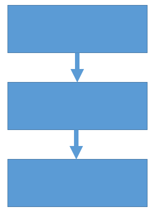
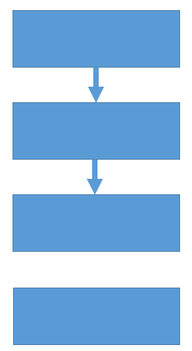
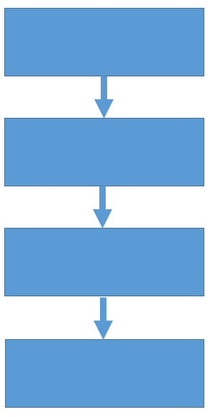
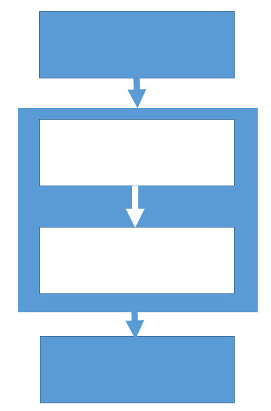

I've written a couple of codes to extract architecture information from source and written other articles for CodeProject to describe them. When refactoring my code, I find myself competing to optimise metrics over each iteration. Obviously, any system can be gamed and my choice of Cyclometric number as metric is because it has a number of invariances which stop the value changing under various refactorings.
The Cyclomatic number of a graph is defined as E + P – N where E is the number of edges, P is the number of parts and N is the number of nodes. Given that there are no duplicate edges, the number varies from 0 to N times (N-1) for a digraph.
A basic digraph equivalent to a 3-layer architecture can be drawn as...

...for which the Cyclomatic number is E + P – N = 2 + 1 - 3 = 0.
Adding a solitary node also adds a part...

...for which the Cyclomatic number is E + P – N = 2 + 2 - 4 = 0.
Drawing an edge to the new node makes one whole part...

...for which the Cyclomatic number is E + P – N = 3 + 1 - 4 = 0.
Taking the two middle nodes and making them into their own graph...

...for which the Cyclomatic number is E + P – N = (2 + 1 - 3) + (1 + 1 - 2) = 0.
So all the examples have the same Cyclomatic number which is the same as stating that, under the transforms used, the number is invariant. If the examples included some branching then this may not necessarily be the case.
The main example of note was the final one when the subgraph was created. In the context of architecture modelling, it is preferable to place elements within a hierarchy to simplify the architectural views. The ability to do this without either increasing or decreasing the appropriate metric allows the architect to simplify their views whilst maintaining their score.
This property has allowed me to write architectural software that takes C# code structured by layers of namespace, create a dependency graph at each namespace level and sum the Cyclomatic numbers to produce one number for the whole application with some confidence that it is meaningful. Then, I can track it over time to see how it improves and deteriorates.